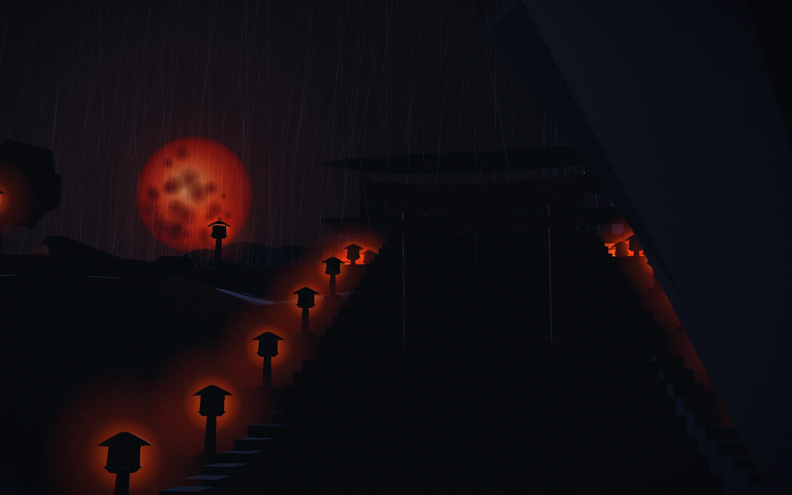
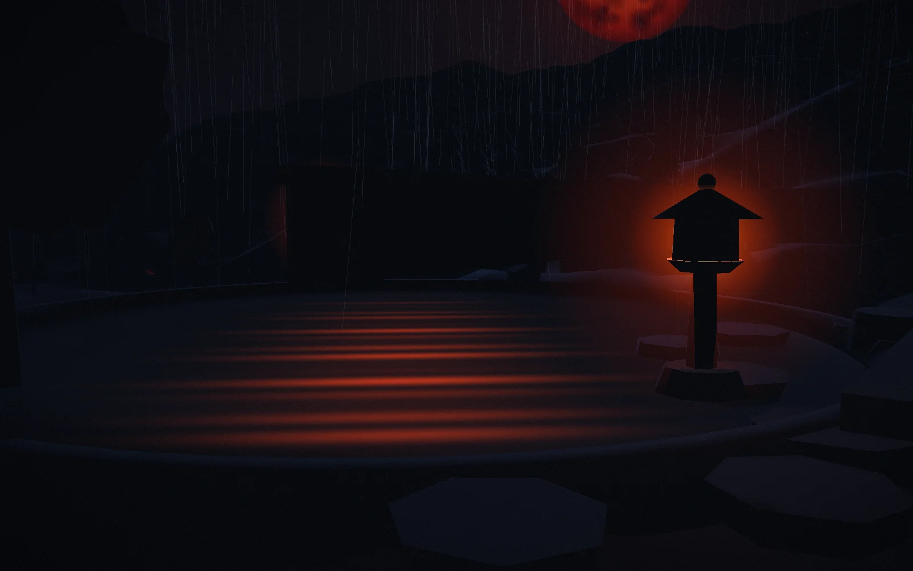
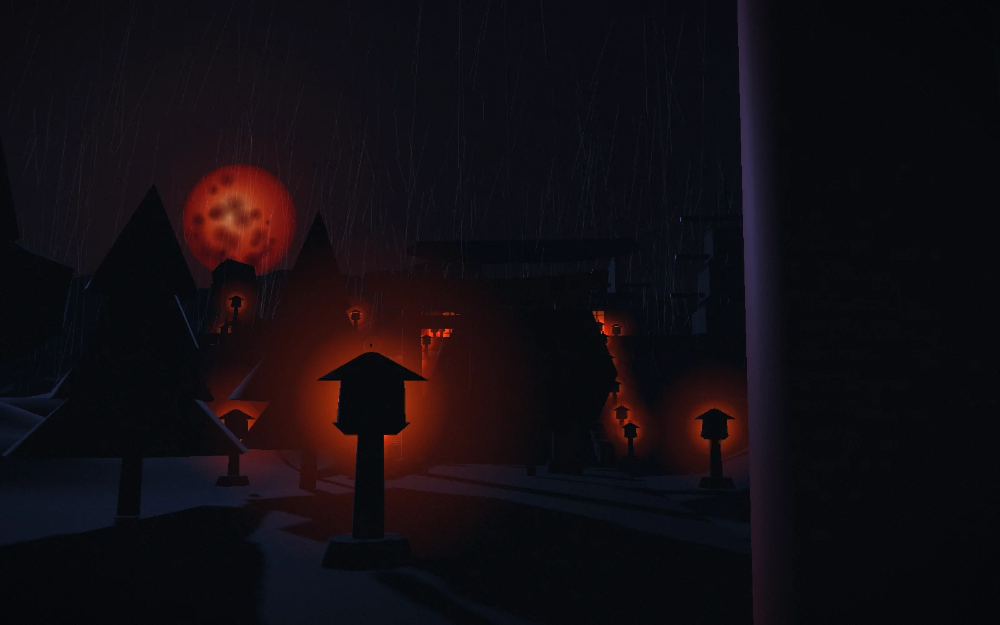
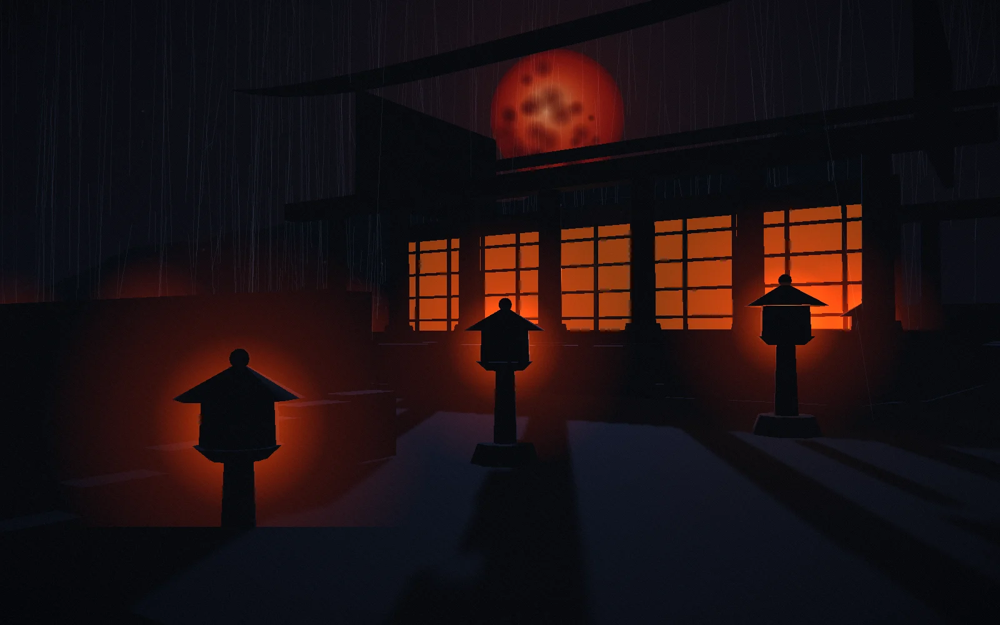
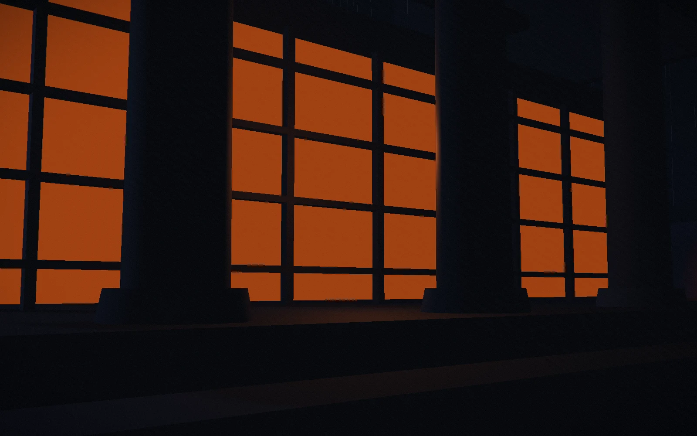
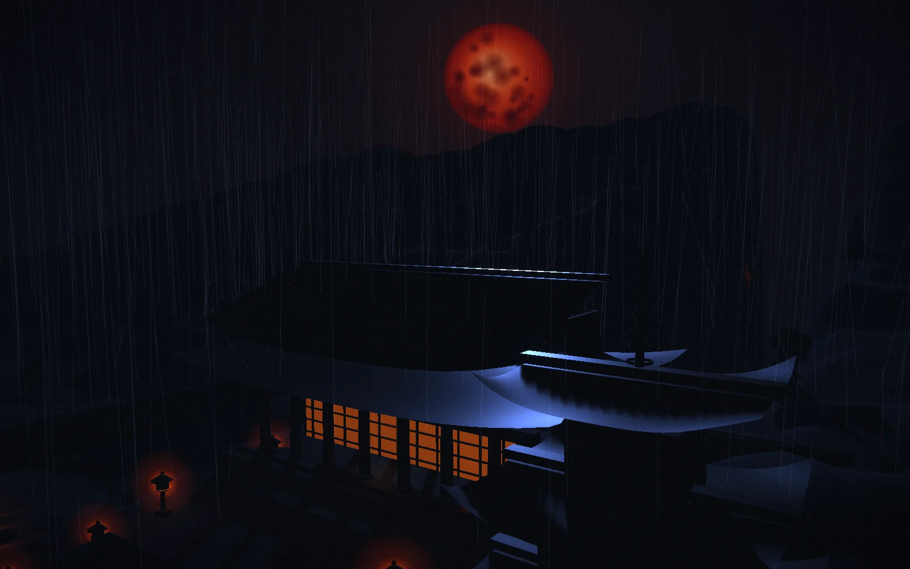

Kioto · Templo de montaña
Cinco capítulos
Renderizado en vivo
La montaña guarda lo que el día devuelve
Kage es un paseo nocturno por un templo que no existe, sobre una ciudad que sí. Una sola cámara, sin cortes. La escalinata, la lluvia, los faroles y la luna se levantan en el momento en que llegas, y se desmontan cuando te vas.
Empieza la subida01
Umbral
山門 · Sanmon
Cruzas donde el mundo se adelgaza
Un torii no es una puerta. No hay nada cerrado detrás y a nadie se le niega el paso. Señala el punto donde termina el suelo corriente y empieza el otro, y lo hace con dos pilares y un dintel.
Bajo la puerta el camino es de grava y la lluvia suena como papel al rasgarse. Por encima, noventa y un peldaños, cada uno gastado hasta formar un cuenco por gente que subió aquí a oscuras mucho antes que tú.
Camina por un lado. El centro del camino es de aquel para quien se levantó la puerta.

02
Jardines quietos
静庭 · Seitei
Aquí nada tiene prisa
Al oeste de la escalinata el terreno se allana en un cuenco de grava rastrillada y un estanque negro. A esta hora el agua es lo más luminoso de la montaña, porque es lo único que sostiene la luna.
Un jardín así es sobre todo renuncia. Apenas flores, ningún color que no esté ya en la piedra. Lo que queda tiene que estar dispuesto con tal exactitud que quitar una sola roca se notaría.


03
Patio de faroles
灯籠 · Tōrō
Cien fuegos pequeños, cuidados a mano
La electricidad llegó a esta montaña en 1958 y se detuvo en la cocina. El patio se sigue encendiendo a la manera antigua: alguien recorre el circuito entero dos veces por noche con una mecha y un paño.
- i Mecha recortadaAntes de que cambie la hora, para que la llama quede baja y no ahúme la piedra. 火
- ii Vidrio limpiadoLa lluvia deja una película. Un farol sucio se lee como un farol desatendido. 水
- iii Musgo intactoLo único de la montaña que nadie tiene permiso para arreglar. 苔
- iv Última luz contadaNoventa y seis en total. Si uno está apagado, la ronda vuelve a empezar. 光

04
Oficio sagrado
手仕事 · Tashigoto
La mano recuerda lo que la mente suelta
Detrás de los paneles la sala es una sola estancia, y la estancia es casi todo suelo. Lo poco que se guarda en ella lo hicieron cuatro personas que son, cada una, la cuarta o la quinta de su nombre en hacerlo.
Ninguno de estos oficios es difícil de describir y todos llevan una vida entera. Ese es el chiste que la montaña no deja de contar.

- 01WashiCorteza de morera batida hasta hacer pasta, secada sobre una tabla contra el muro norte.和紙
- 02SumiHollín y cola, prensados y dejados a oscuras tres años antes de que nadie escriba con ellos.墨
- 03KumikoCelosía cortada para encajar sin un solo clavo ni una gota de cola.木
- 04KintsugiLa rotura reunida con laca y oro, y nunca disculpada.金
05
Última luz
残光 · Zankō
Lo que la oscuridad te devuelve
Desde encima de la sala se ve la subida entera de una vez: las puertas por las que pasaste, el patio, los faroles bajando la escalinata como un collar que se ha caído, y más allá de todo eso el valle con sus propias luces, más frías.
Aquí no se te ha pedido nada y no se te va a pedir. La lluvia sigue. Dentro de cuatro horas el cielo detrás de la cresta empezará a agrisarse, y todo el conjunto volverá a parecer piedra mojada y corriente.
